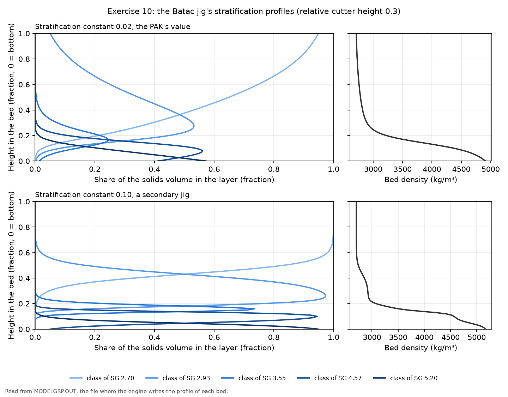
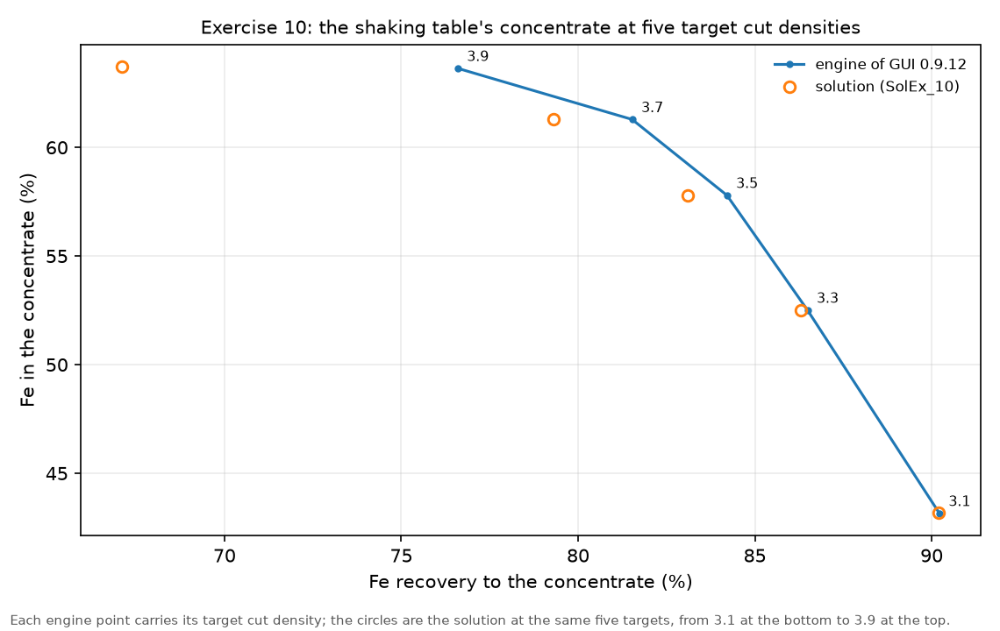
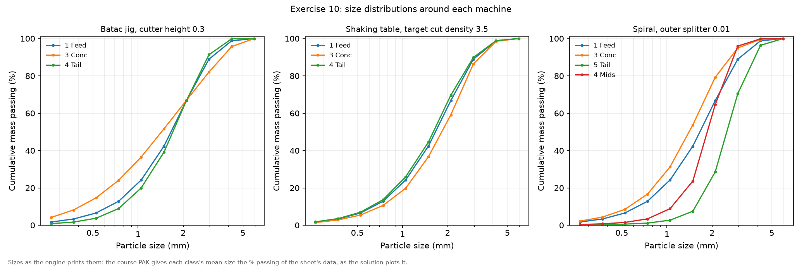
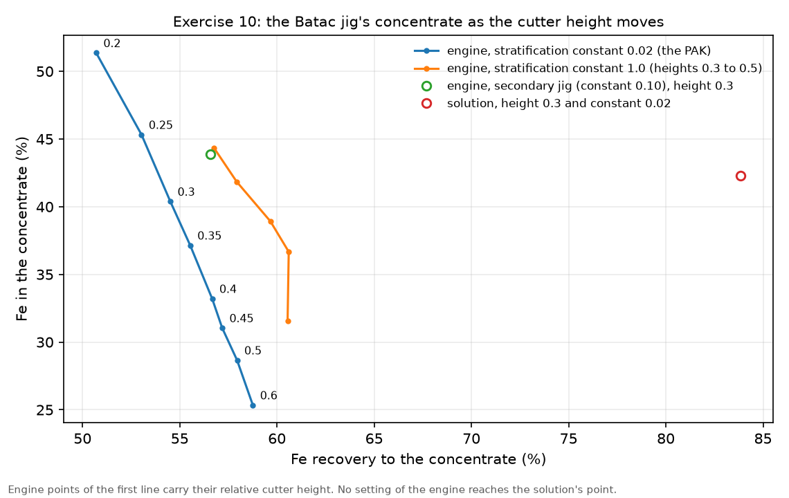

Exercise 10: investigation of wet gravity models
module 4 · King 7.3 (stratification and jigs), 7.4 (partition functions)
Read in King: King 7.3 · Autogenous media separators · p. 231King 7.4 · Generalized partition function models for gravity separation units · p. 252
The exercise sheet and the worked files live on the PC copy of Malla; the sheet's numbers are transcribed in this guide.
On this page
What they ask
The sheet is Ex_10.pdf (Bertil Pålsson, 2010-11-03, three pages). Most wet gravity machines are modelled on one idea, the stratification of a bed of particles, and the exercise tries three of those machines on the same iron ore to see how their models behave. The sheet adds, with a wink, that "wet" is not quite the right word, since air tables stratify too.
The ore (2.2). Two minerals: magnetite, density 5.2 g/cm³ with 72.4 % Fe, and a silicate, 2.7 g/cm³ and pure SiO₂. The sheet describes it with 5 grade classes (five density intervals, each with its own magnetite content), 1 S-class, 10 size classes and a largest particle size of 5 mm. The composition of each class goes into the grade classes, and how the mass spreads over the five classes, in three size ranges, goes into the feed stream as its grade distribution. The two tables are the sheet's, with its numbers as printed:
| Density class (g/cm³) | % magnetite | under 1.07 mm | 1.07 to 2.15 mm | over 2.15 mm |
|---|---|---|---|---|
| float at 2.70 | 0.0 | 0.6 | 0.5 | 0.4 |
| 2.70 to 3.17 | 16.3 | 0.2 | 0.25 | 0.25 |
| 3.17 to 3.94 | 49.8 | 0.0 | 0.05 | 0.10 |
| 3.94 to 5.2 | 85.1 | 0.1 | 0.1 | 0.2 |
| sink at 5.2 | 100.0 | 0.1 | 0.1 | 0.05 |
The last three columns are mass fractions, so each of them adds up to 1.
| Sieve (mm) | Cum. % finer | Sieve (mm) | Cum. % finer |
|---|---|---|---|
| 4.29 | 99.0 | 0.76 | 13.4 |
| 3.04 | 90.0 | 0.54 | 6.9 |
| 2.15 | 68.4 | 0.38 | 3.5 |
| 1.52 | 43.8 | 0.27 | 1.8 |
| 1.07 | 25.0 |
The flowsheet (2.1). First a feed stream into a mixer, and every machine behind the mixer. The material definition stays with the feed stream, so a machine can be swapped without defining the ore again.
Three machines, one at a time (section 3):
- 3.1 Jig. A single Batac jig with the stratification model, 60 t/h at 60 % solids, fly-outs showing % Fe. The sheet asks you to ignore that this ore is probably too fine for a jig. (1) Run with the default values. (2) Plot the size distributions. (3) Plot the stratification profiles: can the settings change anything? (4) Set the stratification constant of a secondary jig and run again: any difference, and why?
- 3.2 Shaking table. A single table, 3 t/h at 30 % solids, at a cut density you choose. (1) Run: anything odd? (2) The sheet's item 2 reads only "c", a leftover with no question in it. (3) In the report, does the real cut density agree with the one you asked for, and can the difference be predicted? (4) Run other cut densities and draw a grade and recovery diagram with each point labelled with its cut density.
- 3.3 Spiral. A single spiral with the LISP model, its middlings back to the mixer, 4 t/h at 45 % solids. (1) Run with the default splitters: does anything happen? (2) Plot the size distributions. (3) In the report, is information missing, or does the model have a built-in weakness? (4) Move the splitters until the result is acceptable.
How the work flows
The three sections look alike, and the risk is to treat them as one long run. They are three short investigations on one fixed ore. You define the ore once, on a feed stream that goes into a mixer, and you never edit it again, because every comparison in the exercise assumes the same feed. Then each machine gets its own short loop: one run at the sheet's starting point, one setting moved per run, and a reading of the report. Nothing is being designed here. The question in every section is how the model reacts, so the reading, not the running, is the deliverable.
- Fixed for every run: the ore of section 2.2 (two minerals, five density classes, the washability table, ten size classes up to 5 mm, the sieve analysis) and the feed stream into the mixer. Only the feed rate and the % solids change from machine to machine, because the sheet gives each machine its own: 60 t/h at 60 %, 3 t/h at 30 % and 4 t/h at 45 %.
- Chosen once per machine: the unit and its model. The Batac jig takes SJIG, which is not the unit's default; the shaking table takes SHAK; the spiral concentrator takes LISP, which is not the unit's default either.
- Turned in each loop: the jig's cutter height and stratification constant, the table's target cut density and the spiral's outer splitter, one number per run.
- Read after each run: the concentrate's tonnage and % Fe (so its Fe recovery), the partition factors of the report, the water in each product, and for the jig its stratification profile.
- Compared at the end: the jig's profiles at two constants; the table's five points in a grade and recovery diagram, each labelled with its cut density; the spiral at a few splitter positions; and one sentence per machine on why its model behaves as it does.
What you touch, read and wait for, machine by machine:
| Run | What you change | What you read | When to stop |
|---|---|---|---|
| Jig, first run | Nothing: SJIG at its defaults, relative cutter height 0.3 and stratification constant 0.02 | Concentrate and tailing in t/h and % Fe, the size curves, the stratification profile | After one run: it is the reference for the rest of section 3.1 |
| Jig, cutter height | The relative cutter height, one value per run | The concentrate's % Fe and t/h | When you can say where the profile puts the heavy layers and what a lower or a higher cut does |
| Jig, secondary | The stratification constant, from 0.02 to 0.10 | The profile (do the heavy classes pack into a thinner layer?) and the grade | One run, set beside the first |
| Table, five targets | The target cut density: 3.1, 3.3, 3.5, 3.7 and 3.9 | The partition factors, the real cut density, the concentrate's % Fe and Fe recovery, the water in each product | After the fifth run; then draw the diagram |
| Spiral | The outer splitter: 0.5 (the default), then 0.2, 0.05 and 0.01 | The middlings flow, the concentrate's % Fe and recovery, the report's warning | When a new position no longer changes the grade |
How to check a run
- The feed. Every run starts from 19.0 % Fe (the hand calculation below gives 18.9). Another number in the feed fly-out means that the grade classes or the grade distribution by size are not the sheet's.
- The balance. The products add up to the feed, in solids and in iron. At 60 t/h and 19.0 % Fe the jig receives 11.4 t/h of iron, and the concentrate and the tailing must carry exactly that between them.
- The partition factors. For the table and the spiral the report gives, for each density class, the share of it that leaves with the light product. That share must fall as the density rises, from near 1 for the silicate class to near 0 for the magnetite class, and the density where it crosses one half is the real cut density.
- The water. Read the % solids of each product. In this exercise the water does not always follow the solids (item 3.2.1 is about exactly that), so write down where it goes.
- Convergence. The spiral's middlings return to the mixer, which makes a loop, so the run only counts once the engine reports that it converged.
Why (the engineering)
Stratification: heavy particles sink, and random motion stirs them up again. When a bed of particles is lifted and dropped by pulses of water, as in a jig, or slides down a surface under a film of water, as on a cone or a spiral, the particles rearrange themselves so that the heaviest ones end up at the bottom, because that is the arrangement with the least potential energy. The same motion that lets them move also mixes the layers at random, so the boundaries between layers are never sharp. King (section 7.3.1) models the balance of the two effects, and the result is a stratification profile: at each height of the bed, how much of each density class is there. The strength of the stratifying action against the mixing is one number, the specific stratification constant , in m³/kg. It is 0 for a bed that stays perfectly mixed and grows as the layers get sharper; King (section 7.3.3) gives practical values from about 0.001 m³/kg for a poor separation to 0.5 m³/kg for a very accurate one.
The jig: where the bed is cut decides the products. In MODSIM's stratification jig (SJIG) the bed is cut at a relative cutter height , between 0 at the floor and 1 at the top of the bed, and what lies below the cut is the concentrate. So the jig has two handles: says how sharply the classes separate into layers, and says where you split them. A secondary jig receives a bed that is already partly stratified, so it reaches its equilibrium profile within the time the ore spends in it, and that shows up as a larger . King's Table 7.3 shows it for industrial jigs, where the second stage of each jig has the larger value (section 7.3.4).
The shaking table: a partition curve by density. The table model SHAK does not compute a bed. It applies a partition curve to the density classes: each class goes to the concentrate with a probability that falls from 1 for the heavy classes to 0 for the light ones, around the target cut density you type. The model also moves the cut with particle size, which is why the cut you read in the report is not the one you asked for; CutPointChange.xls, in the module files, shows the shift. The water is a separate number, because the model splits the feed water between the two products by a fixed percentage that you give, whatever happens to the solids.
The spiral: splitters, not a density. A spiral separates across its trough. The heavy particles move towards the inside, the light ones and most of the water towards the outside, and splitters at the end of the trough cut the flow into concentrate, middlings and tailing. The handles of the LISP model are the positions of those splitters, so it cannot be told a density at which to separate. With a feed as heavy as this one, a quarter of it magnetite at 5.2 g/cm³ and at 45 % solids, the model barely separates anything, and the suggested solution concludes that spiral models do not work well for simulating this kind of ore.
Why the mixer. MODSIM keeps the material definition on the first stream. With a feed stream into a mixer and the machine behind the mixer, you can delete the jig and connect a table without defining five density classes and a washability table again. The spiral uses the mixer twice, because its middlings come back into it.
Before MODSIM: numbers by hand
A toy class first. Take a particle that is half magnetite and half silicate by mass. Its density is not the average of 5.2 and 2.7, because densities add by volume, not by mass. One kilogram of it holds 0.5/5.2 = 0.096 litres of magnetite and 0.5/2.7 = 0.185 litres of silicate, 0.281 litres in all, so its density is 1/0.281 = 3.55 g/cm³, well below the average of 3.95. That is the density of the sheet's middle class, the one with 49.8 % magnetite.
The density of each class follows the same rule, with the mass fraction of magnetite in the class:
- 0 % magnetite: 2.70 g/cm³, the silicate itself.
- 16.3 %: 2.93 g/cm³.
- 49.8 %: 3.55 g/cm³.
- 85.1 %: 4.57 g/cm³.
- 100 %: 5.20 g/cm³, the magnetite itself.
Each value lands inside its interval of the table, which is the check that the class is defined right. These five densities are the ones every report of this exercise lists.
The iron in the feed. The sieve analysis gives the share of each size range: 25.0 % below 1.07 mm, % between 1.07 and 2.15 mm, and % above 2.15 mm. Within each range, the magnetite content is the sum of each class's share times its magnetite:
- Below 1.07 mm: 0.2 × 16.3 + 0.1 × 85.1 + 0.1 × 100 = 21.77 % magnetite.
- From 1.07 to 2.15 mm: 0.25 × 16.3 + 0.05 × 49.8 + 0.1 × 85.1 + 0.1 × 100 = 25.075 %.
- Above 2.15 mm: 0.25 × 16.3 + 0.10 × 49.8 + 0.2 × 85.1 + 0.05 × 100 = 31.075 %.
The whole feed holds 0.250 × 21.77 + 0.434 × 25.075 + 0.316 × 31.075 = 26.1 % magnetite, which is 26.1 × 0.724 = 18.9 % Fe. MODSIM's feed fly-out says 19.0, because it spreads the three ranges over its own size classes. Notice also that the coarser the particles, the more magnetite they carry, which already hints that gravity will work best at the coarse end.
Reading a cut density off a report. At a target of 3.5 the table's report lists, for each class, the share that leaves with the light product: 0.9875 at 2.70, 0.9556 at 2.93, 0.2553 at 3.55, 0.0027 at 4.57 and 0.0005 at 5.20. One half lies between 2.93 and 3.55, so read it on a straight line between those two classes:
The target was 3.5, so the real cut is about 0.2 lower. The solution's report prints 3.311 for the same run, from a finer method (the Gottfried and Jacobsen procedure), so the straight line is close enough to answer item 3.2.3.
Recovery from two fly-outs. With the concentrate at 0.828 t/h and 57.8 % Fe, from a feed of 2.99 t/h at 19.0 % Fe, the Fe recovery is
That is the x coordinate of one point of the table's grade and recovery diagram, and 57.8 % Fe is its y coordinate.
Step by step in MODSIM
The ready-made projects: not in the Examples folder yet, and why
The PC copy of Malla has this exercise solved on the MODSIM engine in Simulation of Mineral Processing/Examples/Ex10 Wet gravity models/: every case of the suggested solution, the answers to the sheet's questions and the four figures of this guide. What the folder does not have yet is a project you can open in the GUI.
- Why. A project of these machines needs an ore of five density classes whose shares change with size, and no project saved by GUI 0.9.12 shows yet how the GUI stores such a material. Saving the course's BatacJig.PAK once from the GUI as a project shows it; then the jig, the table at its five cut densities and the spiral at its splitter positions join the folder, each checked against the engine's runs.
- Meanwhile. The course files BatacJig.PAK, Table.PAK and Spirals.PAK open in the GUI with the ore already defined, and each holds the solution's first run of its machine. Building the ore yourself with the steps below is still the point of the exercise.
Before the first click, Get MODSIM running without grief covers the decimal point, the work area and the saving habits, and the folds below give each window field by field. The steps follow the MODSIM-GUI material wizard; the classic program asks for the same numbers in its system data menus.
Draw the base flowsheet: a feed into a mixer, and the machine behind it
GUI: File > New project; place Mixer-1 and a Batac Jig; draw Feed > Mixer-1, Mixer-1 > jig, jig concentrate > a product named "Concentrate", jig tailing > a product named "Tailing"Define the ore in the material wizard, once
Flowsheet > Material Definition (System Data); fill the tabs in order with the folds below, then Confirm & Finish and save the projectComponents tab: magnetite and silicate, with their densities and analyses
- Material type = Mineral.
- Magnetite, specific gravity 5.2, analysis 72.4 % Fe. The analysis is what lets a fly-out show % Fe; without it the fly-out can show tonnages but no iron.
- Silicate, specific gravity 2.7, analysis 100 % SiO₂. The course file calls it "Silica".
- Magnetic susceptibility κ: leave it. This exercise is gravity only.
- The picture is the tab from Assignment 1, with one mineral; here it has two rows.
See this window in the GUI

Grades tab: the five density classes, with the magnetite and the specific gravity of each
- Basis = Mass, five classes, in the order of the sheet's table: float at 2.70, 2.70 to 3.17, 3.17 to 3.94, 3.94 to 5.2 and sink at 5.2.
- Each row is one class's composition: magnetite 0, 0.163, 0.498, 0.851 and 1.0, and silicate the rest (1.0, 0.837, 0.502, 0.149 and 0). Normalize rows if the wizard offers it.
- Sp. gr. of class = 2.70, 2.93, 3.55, 4.57 and 5.20. These are the numbers of Before MODSIM, and they are the whole point of the tab for a gravity machine: every model of this exercise separates by the density of a class. The course file carries exactly these five values.
- Check after saving. In Assignment 1, GUI 0.9.12 showed a computed value in this column but stored 0 in the project file, and a class with density 0 breaks every gravity model. After the first run, the jig's report must list the five densities above; if it lists zeros, the densities have to go into the project file by hand (the Grades fold of the Assignment 1 guide shows where).
See this window in the GUI

Properties, Liberation and Washability tabs: nothing here
- Use S-classes: off. The sheet asks for 1 S-class, which is the same as none: every particle floats, sinks or stratifies the same way within its grade class.
- Liberation: off. The liberation of this ore is already described by the density classes; the Andrews-Mika model of this tab is for liberation created by breakage, and nothing is broken here.
- Washability: nothing. The tab is for coal, even though the sheet's table is a float and sink analysis; for a mineral material that description lives in the grade classes and in the feed stream's grade distribution.
See this window in the GUI

Size_Conv. tab: ten size classes below 5 mm
- Largest particle size = 0.005 m. The field is in metres, so 5 mm is typed as 0.005. The sieve analysis tops out at 4.29 mm with 99 % finer, so 5 mm leaves room above it.
- Number of size classes = 10. The sheet chooses ten to keep the runs fast. With a √2 series from 5 mm the classes have upper sizes of 5, 3.54, 2.50, 1.77, 1.25, 0.88, 0.63, 0.44, 0.31 and 0.22 mm.
- Convergence: Modified Newton, 0.1 %, 30 iterations for the jig and the table, which have no loop. For the spiral, whose middlings return to the mixer, allow 60 iterations.
See this window in the GUI

Streams tab and the Feed Stream dialog: the feed rate, the sieve analysis and the grade distribution by size
- Solids feed rate and % solids: 60 t/h at 60 % for the jig. You come back to this dialog to change them for the table (3 t/h at 30 %) and the spiral (4 t/h at 45 %).
- Define PSD: the sheet's nine sieve points, typed in micrometres: 4290 → 99.0, 3040 → 90.0, 2150 → 68.4, 1520 → 43.8, 1070 → 25.0, 760 → 13.4, 540 → 6.9, 380 → 3.5 and 270 → 1.8.
- Specify grade distributions: on. This is where the three right-hand columns of the washability table go. The dialog asks for the distribution over the five classes in every size class, and each size class takes the column of the range its upper size falls in, as the course's BatacJig.PAK does: classes 1 to 3 (from 5 down to 1.77 mm) take the "over 2.15 mm" column (0.4, 0.25, 0.10, 0.2 and 0.05), classes 4 and 5 (from 1.77 down to 0.88 mm) take the "1.07 to 2.15 mm" column (0.5, 0.25, 0.05, 0.1 and 0.1), and classes 6 to 10 take the "under 1.07 mm" column (0.6, 0.2, 0, 0.1 and 0.1).
- Specify distribution over S-classes: off.
See this window in the GUI

Review tab: Errors 0, and a summary that shows the classes are in
- Minerals 2, grade classes 5, size classes 10, largest particle size 0.005 m.
- The feed row with a PSD and a grade distribution, and no duplicate stream names.
- Confirm & Finish, then save the project before placing any model. This file is the base for all three machines.
See this window in the GUI

The jig: the Batac Jig unit with the stratification model SJIG, at its defaults
Double-click the Batac jig > Model: SJIG (Stratification jig), not the default BATJ > leave both fields as they are; then switch on fly-outs with t/h, % solids and % Fe on every streamBatac Jig → SJIG, stratification jig: two fields
- Relative cut height in bed = 0.3 (the default; it accepts 0 to 1). The height of the cutter above the floor of the bed, as a fraction of the bed's height. The layers below it are the concentrate, so a lower cut gives a smaller and cleaner concentrate.
- Specific stratification constant = 0.02 (the default; it accepts 0 to 10). How strongly the bed stratifies against the random mixing, in the units of King's model. Item 4 changes it to 0.10, the value the suggested solution takes for a secondary jig.
Run, read the products, and plot the size curves and the stratification profile
Run; read the fly-outs of the concentrate and the tailing; open the jig's report; export the size distributions of the feed and both productsMove the cutter, then set a secondary jig's constant, and save
Jig window: relative cut height 0.2, Run, read; back to 0.3; then specific stratification constant 0.10, Run; save as Ex10_jigThe shaking table: swap it in behind the mixer
Delete the jig; place a Shaking Table; connect Mixer-1 > table, table concentrate > "Concentrate", table tailing > "Tailing"; Material Definition > Streams > Feed Stream: 3 t/h at 30 % solids; double-click the table > SHAKShaking Table → SHAK, shaking table: two fields
- Target cut-point SG₅₀ = 3.5 for the first run (the default is 2.8; it accepts 1 to 10). The sheet lets you choose. 3.5 sits between the classes of 2.93 and 3.55, which separates the silicate-rich classes from the magnetite-rich ones; the suggested solution uses it too. Item 4 then moves it to 3.1, 3.3, 3.7 and 3.9.
- Water recovery to tailings W % = 95 (the default; it accepts 0 to 100). The share of the feed water that leaves with the tailing. It does not touch the solids: the concentrate is 0.828 t/h at 57.8 % Fe whatever you type here.
- The trap in item 1. The course file Table.PAK was made with an older program that stored only the cut density, and the suggested solution's run sends just 5 % of the water to the tailing. Its concentrate then leaves at 11 % solids and its tailing at 86 %, which is the "odd" thing the sheet wants you to notice: the water does not follow the solids. With the GUI's 95 % the products look normal (concentrate at 70 % solids, tailing at 25 %). Run both values once and say which one the solution used.
Read the real cut density, then run five targets and draw the diagram
Open the table's report; read the partition factors of the five classes; set the target to 3.1, 3.3, 3.7 and 3.9 in turn, Run, read the concentrate's t/h and % Fe each time; save each run under its own nameThe spiral: LISP, with its middlings back to the mixer
Delete the table; place a Spiral Concentrator; connect Mixer-1 > spiral, spiral concentrate > "Concentrate", spiral tailing > "Tailing", spiral middlings > back into Mixer-1; Feed Stream: 4 t/h at 45 % solids; double-click the spiral > LISP (Lab spiral concentrator), not the default SPIRSpiral Concentrator → LISP, lab spiral concentrator: three fields
- Outer splitter position = 0.5 (the default; it accepts 0 to 1). With the inner splitter, it bounds the band of the trough that becomes middlings. Item 4 moves it down to 0.2, 0.05 and 0.01; the suggested solution ends at 0.01, a value it calls abnormally low.
- Inner splitter position = 0.5 (the default; it accepts 0 to 1). The solution leaves it at 0.5 throughout.
- Spirals in parallel = 1. The sheet asks for a single spiral. The report warns when the flow per spiral passes the 108 L/min the model was built for; this feed gives 109.6 L/min.
Run with the defaults, then move the outer splitter until nothing more changes
Run at 0.5 and 0.5; read the three products and the report; then outer splitter 0.2, 0.05 and 0.01, one run each; save as Ex10_spiralExpected results
The numbers below come from the engine of GUI 0.9.12 running the course files with the solution's settings, set beside the suggested solution SolEx_10.pdf. In every pair the engine's number comes first and the solution's second.
The jig (3.1), at a cutter height of 0.3 and a constant of 0.02. This is the one machine of the exercise that this engine does not bring to the solution.
| Stream | t/h | % solids | % Fe |
|---|---|---|---|
| Feed | 60 / 60 | 60 / 60 | 19 / 19 |
| Concentrate | 15.4 / 22.6 | 60 / 60 | 40.4 / 42.3 |
| Tailing | 44.6 / 37.4 | 60 / 60 | 11.6 / 4.97 |
The engine's concentrate is smaller and poorer, and its tailing keeps 11.6 % Fe where the solution's keeps 4.97. To see whether another setting closes the gap, the Examples folder swept the cutter height from 0.2 to 0.6, and then the cutter height together with the constant from 0.05 to 1.0, 33 runs in all, and no run takes the tailing below 10.8 % Fe. So the stratification model of this engine treats the ore differently from the engine the solution used. The directions agree, though: a lower cut gives a cleaner concentrate on both.

- Can the settings change anything (item 3)? Yes. Above about 0.36 of the bed's height the bed density stays within 5 % of its value at the top, 2712 kg/m³, which is almost pure silicate, and a cut at 0.2 gives the cleanest concentrate; the solution reaches the same conclusion from its own profile.
- A secondary jig (item 4). At 0.10 the profiles compress, as the solution says. The solution then expects the grade to drop at a cut of 0.3, but on this engine it rises, from 40.4 to 43.9 % Fe, while the concentrate falls from 15.4 to 14.7 t/h. The two engines agree on the profiles and disagree on the grade.
The table (3.2), at a target of 3.5.
| Stream | t/h | % solids | % Fe |
|---|---|---|---|
| Feed | 2.99 / 3 | 30 / 30 | 19 / 19 |
| Concentrate | 0.828 / 0.82 | 11 / 11 | 57.8 / 57.8 |
| Tailing | 2.2 / 2.18 | 86.2 / 86.2 | 4.42 / 4.42 |
The table matches the solution once 5 % of the water goes to the tailing, and its partition factors are the solution's to the fourth decimal.
| Target cut | Real cut () | Fe recovery % | % Fe in the concentrate |
|---|---|---|---|
| 3.1 | 3.08 / 2.987 | 90.2 / 90.2 | 43.2 / 43.2 |
| 3.3 | 3.22 / 3.122 | 86.5 / 86.3 | 52.5 / 52.5 |
| 3.5 | 3.33 / 3.311 | 84.2 / 83.1 | 57.8 / 57.8 |
| 3.7 | 3.67 / 3.584 | 81.5 / 79.3 | 61.3 / 61.3 |
| 3.9 | 3.95 / 3.728 | 76.6 / 67.1 | 63.6 / 63.7 |
The engine does not print the separation density, so its column is read on a straight line between the two classes that straddle one half, as in Before MODSIM. The grade matches at every point and the recovery at the first three; at 3.7 and 3.9 the engine recovers more iron, and the solution prints no fly-outs for those runs to trace why.

The spiral (3.3), outer splitter 0.01 and inner 0.5.
| Stream | t/h | % solids | % Fe |
|---|---|---|---|
| Feed | 4 / 4 | 45 / 45 | 19 / 19 |
| Concentrate | 3.02 / 3.01 | 95.6 / 95.6 | 24.2 / 24.2 |
| Tailing | 0.972 / 0.985 | 17.2 / 17.2 | 3.19 / 3.19 |
| Middlings | 0.972 / 0.987 | 96.6 / 96.6 | 4 / 4.01 |
The spiral matches the solution in every run. None of its partition factors (0.2778, 0.1938, 0.0387, 0.0001 and 0.0000) reaches one half, so there is no crossing to read a separation density from: the solution's 2.32 lies below the lightest class, 2.70, and must be an extrapolation. That, with the warning about the flow per spiral, is the answer to item 3: the model's only handles are its splitters, so it cannot be told where to separate.

Common mistakes
- Leaving the Batac jig on its default model, BATJ. Its target density of 1.4 is a coal cut: every class of this ore is denser, so the jig splits the feed 90 to 10 and both products keep 19.0 % Fe. The sheet asks for the stratification model, SJIG.
- Leaving the spiral on its default model, SPIR. The sheet names LISP, whose handles are the splitters of item 4.
- Reading "anything odd?" with the GUI's water default. At 95 % of the water to the tailing the table's products look normal. The solution's run sends 5 %, and that is where its concentrate at 11 % solids comes from.
- Skipping the grade distribution by size. Then every size class gets the same mix of density classes, the coarse fraction loses its extra magnetite, and the products differ from the solution's even at the right cut.
- A class density stored as 0. Check that the first report lists 2.70, 2.93, 3.55, 4.57 and 5.20; a zero there breaks every gravity model of this exercise.
- Typing 5 as the largest particle size. The field is in metres: 0.005.
- Reading a cut density where there is none. When no partition factor crosses one half, as on the spiral, there is no separation density between the classes, and the honest answer says so.
- Expecting the jig to land on the solution. On this engine it does not, whatever the settings; compare directions, not numbers.
- Looking for item 3.2.2. It reads only "c" on the sheet.
Sensitivity analysis
- The jig's cutter height. At a constant of 0.02, lowering the cut from 0.3 to 0.2 gives the cleanest concentrate of the sweep, 51.4 % Fe, but only 11.3 t/h; raising it takes more mass at a lower grade. The Examples folder draws the whole sweep of 33 runs against the solution's single point.

- The jig's constant. From 0.02 to 0.10 the heavy layers compress into the bottom 0.17 of the bed; on this engine the grade at a cut of 0.3 rises from 40.4 to 43.9 % Fe.
- The table's target. Each step of 0.2 in the target moves the grade by about 2 to 9 points of Fe and the recovery by 2 to 5 points, which is the trade-off the grade and recovery diagram shows.
- The spiral's outer splitter. 0.5 gives 22.1 % Fe with no middlings, 0.2 gives 22.9 %, 0.05 gives 23.9 % and 0.01 gives 24.2 %, all at about 96 to 97 % recovery: the splitter moves the grade by two points at most.
Hand-in checklist
Nothing of this exercise is graded, but the sheet asks to show: